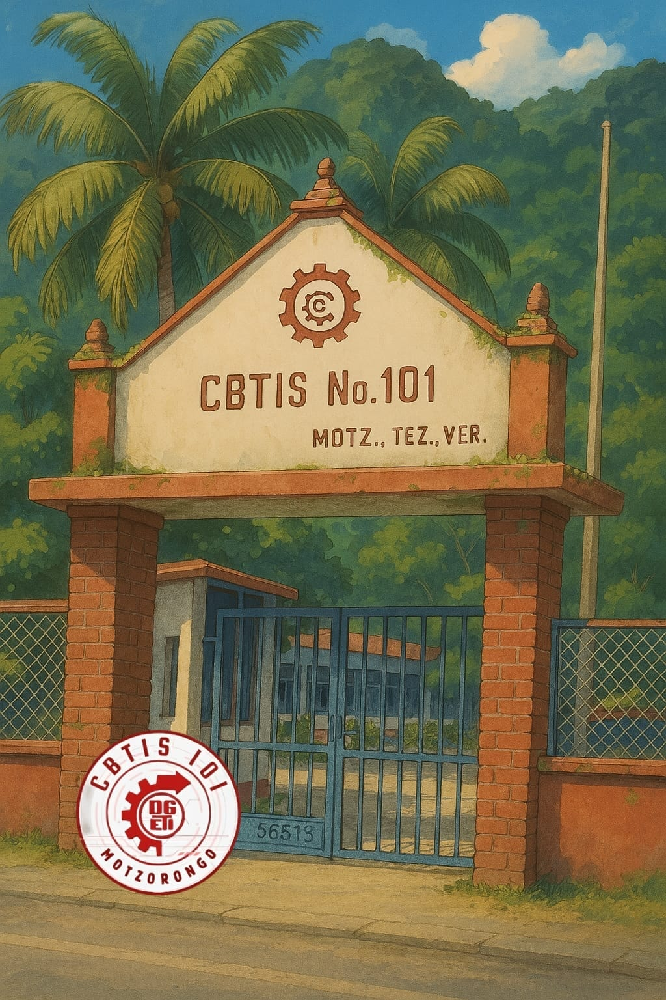
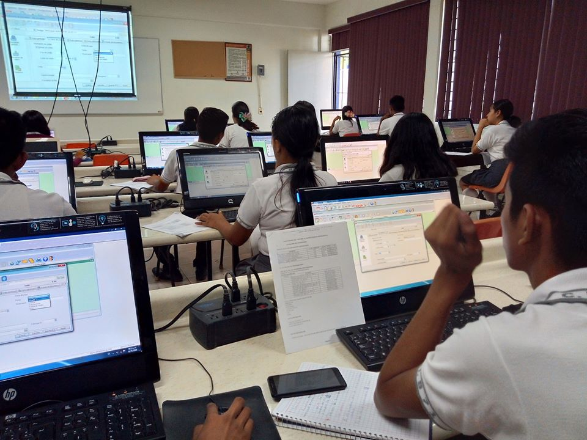
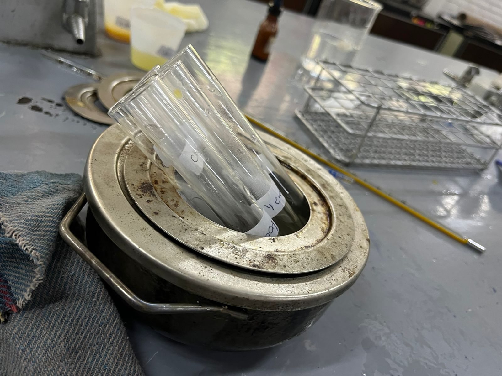
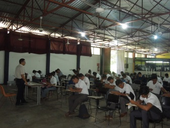
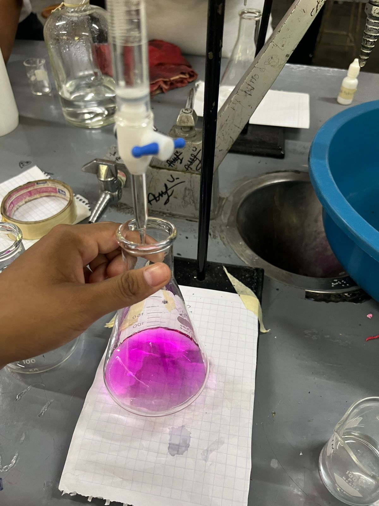

INICIO
El plantel del CBTIS 101 o Cetis 101 es un centro de educación media superior en México que forma parte del subsistema de Centros de Bachillerato Tecnológico Industrial y de Servicios (Cetis) de la Dirección General de Educación Tecnológica Industrial (DGETI). os CBTis fueron creados en la década de 1960 con el objetivo de ofrecer educación media superior en áreas tecnológicas y científicas. Estos centros de educación tienen como misión formar técnicos y profesionales capacitados para incorporarse al mercado laboral o continuar sus estudios en instituciones de educación superior.
¿Qué ofrecemos en el CBTIS 101?
El CBTIS 101 en Veracruz es una institución de educación técnica especializada que ofrece una formación práctica y enfocada en el mercado laboral. Algunas de sus características incluyen:
- Carreras técnicas: Cuenta con 10 programas de nivel técnico, como Técnico en Laboratorio Clínico, Técnico en Máquinas-Herramienta y Técnico en Mecánica.
- Enfoque práctico: Su enseñanza está diseñada para que los estudiantes adquieran habilidades aplicables en el campo laboral.
- Infraestructura moderna: Dispone de instalaciones bien equipadas para una formación de calidad.
- Vínculos empresariales: Tiene conexiones con empresas locales y nacionales, lo que facilita prácticas profesionales y oportunidades de empleo.
- Apoyo integral: Ofrece programas de bienestar emocional, actividades deportivas y grupos estudiantiles para fomentar la convivencia.
Aquí una mejor demostración de las Carreras Técnicas que ofrece el CBTIS 101
- Técnico en Contabilidad: Enfocado en finanzas empresariales y toma de decisiones estratégicas.
- Técnico en Laboratorista Clínico: Formación en análisis clínicos para respaldar diagnósticos médicos.
- Técnico en Mecánica Industrial: Especialización en ensamblaje y reparación de maquinaria pesada.
- Técnico en Producción Industrial de Alimentos: Orientado a la producción de alimentos a gran escala con calidad y seguridad alimentaria.
Estas carreras tienen una duración aproximada de tres años y se imparten en modalidad presencial
Si quieres saber mas sobre nuestro plantel ¡Puedes entrar aqui!